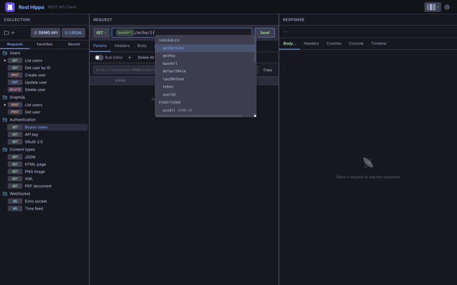
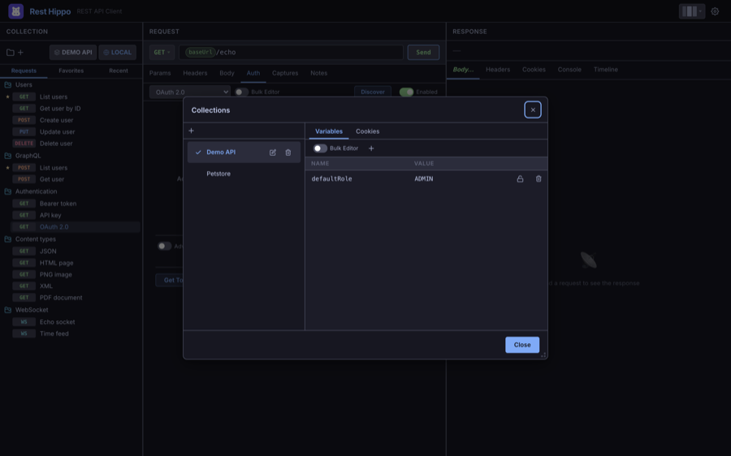
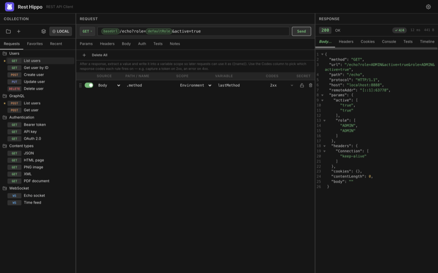

Variables & Environments
Variables let you write a request once and reuse it across hosts, users, and
runs. Anywhere you can type — the URL, params, headers, body, or auth fields —
you can insert a variable with double-brace syntax: {{name}}.
Using variables
Type {{ in any field to open the typeahead, which lists the variables
available in the current scope. Pick one and Rest Hippo inserts it as a highlighted
pill:

At send time, every {{name}} is replaced with its resolved value. With
Show URL preview on, you can see the resolved URL before
you send.
Scopes and resolution order
The same variable name can be defined at several levels. At send time Rest Hippo
resolves each {{name}} by walking scopes from most specific to most general
and taking the first one that defines the name:
request's folder ▸ parent folder(s) ▸ collection environment ▸ collection Global
(nearest ancestor first) ───────────────────────────────────────▸ (most general)
- Folder — variables on the request's own folder win first. If the name isn't there, Rest Hippo keeps walking up the folder hierarchy — each parent folder in turn, nearest ancestor first — so an inner folder overrides a value set on an outer one.
- Collection environment — the active environment's variables, checked after the whole folder chain. Switching environments swaps these values.
- Collection Global — the collection-wide set, checked last. Variables every request in the collection should see go here (each collection has its own Global set — see Environments below).
So a baseUrl set on the request's folder overrides one on a parent folder,
which overrides the active environment's baseUrl, which in turn overrides
the collection Global value — first match wins, nearest scope first.
Folder and collection-wide variables
Click a folder in the tree to edit its variables right in the center panel: the request editor is replaced by an inline variable editor scoped to that folder, and selecting a request switches the panel back. It offers the same bulk-text and key/value modes — and per-variable secure masking — as the other variable editors, and saves as you type.

Clicking a collection edits its Global environment in that same inline editor — collections no longer have a separate variable set; their collection-wide variables are simply the Global environment (also editable from the Collections manager's Environments tab).
Folder variable profiles
Folder variables give you targeted custom variables — scoped to just the requests under a folder — and a profile lets you flip those values without editing them. That makes profiles ideal for custom, exploratory testing: keep several value sets side by side and switch between them with a single keystroke.
A profile is a named alternate set of values for a folder's variables — handy when the same requests point at different back-ends (say Dev, Staging and Prod) that differ only in a host, key, or token. Profiles name value-sets for a folder's variables only — they never rename or re-value environment or Global variables (that's what environments are for). Profiles are defined once and span the whole collection, so every folder shares the same profile names while keeping its own per-profile values.
Every folder starts with a single Default profile — the plain variables you edit when no named profiles exist. The Default profile owns the variable set: it is the only profile where you can add, rename, remove, or mark a variable secure. Its controls live on the far right of the folder variable editor's toolbar:
- ＋ (Add profile) — always shown. It opens a small popup to name a new profile; press Enter to create it, or Escape / click away to cancel. Creating a profile switches to it and copies the Default's variable names with their values cleared, ready for you to fill in. A collection holds up to nine named profiles; the ＋ control disables once you reach the limit.
- Profile selector and 🗑 (Delete profile) — appear once at least one named profile exists. The selector lists Default plus your named profiles; Delete removes the selected profile (Default can't be deleted).
How values behave:
- A profile overrides only what you set; everything else inherits the Default. Each variable in a named profile is either inherited (you haven't given it a value — it resolves to the Default's value) or an override (you've set your own). This is per variable, so a profile is an overlay of just the differences — the same everywhere a variable resolves: sending, the URL preview, generated cURL, and code snippets.
- In the editor, an inheriting field is blank with an "inherits default value" hint; typing a value makes it an override. A ↺ reset button (in place of the row's delete) drops an override so the variable inherits again — it's enabled only while the row is an override. Because inherit vs. override is tracked per variable, you can deliberately override to an empty value (clear an override's text but don't reset it): that sends a genuine blank rather than inheriting. (The bulk editor can't tell an empty override from an inherit, so there a blank line means inherit; use the table editor to force an empty value.)
- The variable set is fixed outside the Default. On a named profile the editor locks structure — you can edit values only; the name fields are read-only and the secure toggle is disabled. Add, rename, or remove a variable on the Default profile and every profile picks up the change (a new variable is inherited everywhere; a removed one drops out).
- Switching folders keeps your selected profile; the editor just re-shows the new folder's variables under it.
Once a collection has named profiles, a switch icon also appears in the request editor — to the right of the URL preview's Copy button, or beside the Send button when the URL preview is hidden. Click it to open a menu of every profile (with its shortcut) and a check beside the active one; pick one to activate it.
You can also switch the active profile from anywhere with the keyboard — hold ⌥⌘ (Cmd+Opt; Ctrl+Alt on Windows / Linux) and press the profile's number: ⌥⌘0–⌥⌘9, where 0 selects the Default and 1–9 the first through ninth named profiles, in the order they appear in the selector. A number with no matching profile does nothing.
The selected profile is live: requests in the collection resolve their folder variables using the active profile's values, so switching profiles switches which back-end your requests hit. Profiles are independent of Environments — Environments switch the collection-wide (Global) values, profiles switch a folder's values; the two compose. A folder's per-profile values travel with it in a Rest Hippo export/backup.
Environments
An environment is a named set of a collection's variables you can switch
between. It's how you break a collection's variables down by deployment stage:
define one environment each for Local, Dev, QA, and Production, and
the collection's variables — baseUrl, credentials, IDs — flip to that stage's
values in a single click. (Environments switch the collection-wide set; to switch
a folder's values instead, use its profiles.)
Environments belong to the collection. Each collection has its own Global
set and its own list of named environments, with its own active selection. When
you switch the active collection, the environment picker and the active
environment switch with it — so a Staging environment in one collection is
entirely independent of a Staging in another. A brand-new collection starts
with an empty Global set and no named environments.
Click the environment picker in the collections toolbar (it shows the active
environment, e.g. LOCAL) to open a quick-switch menu. It lists Global
followed by every named environment, with a check beside the active one — pick
one to make it active instantly (all {{variables}} resolve against it).
To add, delete, or edit environments, open the Environments tab of the Collections manager — right-click the environment picker and choose Manage…, press ⌘/Ctrl + E, or open the collections manager and switch to the Environments tab. (A plain click on the picker only switches the active environment.)
- The Environment dropdown at the top selects which environment you're editing: Global (always present) or any named environment. Choosing one also makes it the active environment, kept in sync with the toolbar picker.
- + adds a named environment (type its name and press Enter); the trash button deletes the selected environment (with a confirmation). Global can't be deleted.
- Below the selector, the variable editor edits the selected environment's variables as a key/value grid (or as plain text via Bulk editor). Changes save automatically.
Secure variables
Mark a variable secure (the lock icon) to encrypt it at rest and mask it in the UI. Revealed secrets re-mask themselves automatically after a short time. Use secure variables for tokens and passwords you reference from auth fields.
Captures
Captures close the loop: after a request succeeds, pull a value out of the response and write it into a variable that later requests can use. A login request can capture the returned token; the next request sends it as a Bearer token — no copy-paste.
Configure them on the Captures tab of the request:

Each capture rule has:
| Field | Meaning |
|---|---|
| Source | Where to read from: the Body, a Header, or the Status code |
| Path / Name | For Body, a dot-path like .data.token; for Header, the header name |
| Scope | Where to write: Environment or Global |
| Variable | The variable name to write |
| Codes | Which response codes the rule fires on (see below) |
| Secret | Mark the captured value secure (encrypted, masked) |
For the Body source the same dot-path (.data.token, .items.[0].id)
works whether the response is JSON, YAML, or XML — the body is
parsed automatically and the path is walked over it. XML is addressed from its
root element (e.g. <auth><token>…</token></auth> → .auth.token), and
repeated tags become an indexable list (.list.item.[0]). A body that isn't one
of those formats, or a path that finds nothing, is reported as a warning and
captures nothing.
Choosing which response codes a rule fires on
Each rule has its own Codes selector — click it to open a checklist where you
can tick whole status groups (1xx–5xx), choose Any status, or type
specific codes (e.g. 201, 404) that appear as removable chips. A rule
runs only when the response status matches its selector, so a single request can
capture different values into different variables depending on the outcome — for
example capture the access token from a 2xx body into token, but capture the
error message from a 4xx body into lastError.
New rules default to 2xx, so captures keep firing only on success unless you opt a rule into other codes. When a value can't be found (missing field, empty body) the rule is reported as a warning and never overwrites a good value with an empty one.
Rest Hippo shows a small toast confirming what was written (e.g. Captured 1 variable → env.token), and the response status bar shows a captured badge.
Next: Functions →